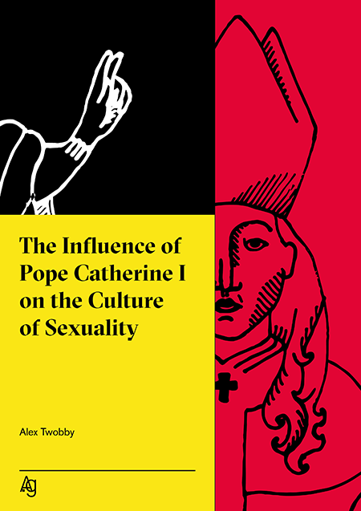

From Alexandre Orlando to the first female Pope
In order to answer these questions we shall go back to 1757, to the household of merchant Antoine Orlando in Paris. His long awaited child is being born. The great joy doesn’t last long, since it quickly turns out that the child’s gender is hard to determine. The baby has both types of genitals. The terrified parents decide to establish the newborn’s identity as male, and give him the name Alexandre. They never spread the problematic information further.
Four decades later, Alexandre Orlando is one of the most influential people in France. After quadrupling family’s fortune, ze gets acknowledged at the royal house of Bourbon as a friend and advisor. It has been speculated that Orlando’s intersex gender was known among the elite and that ze has been involved in a romantic relationship with the latest king before the French Revolution, Louis XVI.
The monarch is beheaded in 1793. Orlando manages to avoid consequences of belonging to the royal circles and joins the revolutionists, attempting a sabotage in which ze would avenge the king. However, after some time ze starts to become convinced of their ideas and the plot is dismissed. Alexandre Orlando becomes a leader of the French Revolution and hir gender is revealed. Hir skills in economy and strategy seem to be more important than the problematic identity, so the revolutionists seem to accept hir dissimilarity.
Orlando’s devotion for the revolt turns towards hir own revolution of gender. Ze strongly condemns the abolishing of all of the Revolution’s women’s clubs by the Jacobin, which was the most influential political club of the period. The crushing of the women’s movement took place in October 1793. Orlando applies for their re-establishment and partly succeeds.
Ze himself maintains a status of not belonging to any of the clubs. In this way, ze is allowed to the meetings of many of them, confronting ideas and encouraging to focus on common goals. Orlando’s incredible diplomatic skills and financial genius provided ze with a respect of the most prominent clubs, which seems even more exceptional if we consider the fact that ze was commonly known for having mingled with Bourbons. In 1796 ze comes out officially and requires to be referred to as Hermaphrodite Orlando. The revolution in the area of gender is progressing, as Hermaphrodite proposes the new French Church to consider making space in its structures for people like hir. At first, the response is negative. The approach shifted only because of how Revolution took its toll on the Catholic Church by confiscating its property and leading to massive executions on priests during the Reign of Terror. In order to improve its poor situation after being separated from the state, the French Church decides to make a pact with Orlando.
In 1801 the Humano Sexualis decree is signed by both parties, where the Church promises to break down gender-based limitations on all levels, meaning non-males entering ecclesiastic structures. This is a groundbreaking event in the history. The new open face of the French Catholic Church bridges the divisions, confusion, pain and the bitterness of the previous decade.
 90 years later in Rome, Elisabeth Williams becomes the first female Pope and she takes the name of Catherine the I. She is the one to legalise the homosexual marriage in 1896.
2
How did the lifting of patriarchal gender limitations for ordaining priesthood influence the deeply male-dominant XIX century France? Or in other words - what did society say about a non-male priest? The fact that not only men were allowed to officiate in church anymore, mainly meant opening its doors to women, since non-binary people like Orlando were in a great minority, almost always living in a closet.
The first few decades were turbulent. The French Church suffered significant decline after the Revolution and even though the new open-minded and modern policy attracted some parts of the society, it sickened the others. Churches that consisted of not exclusively male priests were being set on fire. There was a lot of public debate on whether women are capable of any higher state of serving God than nunhood and whether their spiritual priestly vocation is possible. It was often argued that the Humano Sexualis is a profanation of the Christ’s teaching, as he ordinated only men for his apostles. The response of the French Church was that like in early Christianity, women should be allowed to serve as deacons, priests and bishops, and that there isn’t any biblical reason to prohibit women’s ordination.
3
“So God created mankind in his own image,
in the image of God he created them;
male and female he created them.” - Genesis 1:27
4
"There is neither Jew nor Greek; there is neither slave nor free; nor is there male and female, for you are all one in Christ Jesus.” - Galatians 3:28
4
Despite Humano Sexualis, women kept being seen as the second category humans, representing inferior positions in parishes. Until the XX century the majority of French churches did not give positions for women, which is a textbook example of how strong the male supremacy was at the time. Not only the superiors did not put trust in women. Apart from extreme cases like church buildings being set on fire and female priests being killed, the parishioners were demonstrating generally less regard to them compared to the inviolable male priest’s persona. Bishop Eloise Deschamps elaborates on this in her book "Deliberations on a Female Servant".
"Priestesses of the French Catholic Church after Humano Sexualis were exposed to significant mistreatment. For the exceptional ones that managed to hold a position it was common to be located in the rectorial basements, often together with nuns. They rarely were given an opportunity to hear confessions or to participate in Eucharistic procedures. Their role was vague, somewhere between a nun and Deaconess, depending on the parish’s individual policy. The regulations concerning non-male priests did not exist. Hence formally they all came under the same laws. Nevertheless it took a century for the female priests to pave the way to the higher ministry corresponding to their spiritual vocation. The wisdom of the Lord resides in the challenges he puts on us. The last decades are the proof of the great achievements built on the devotion and strength of the individuals. We have always been, are and will be vulnerable to the culturally based habits, prejudices supported by years and years of practice. The question is how to apply the learning of Jesus Christ to our contemporaneity? How to find the truest value of tradition and separate it from the relics of our painful history? How to sort the wheat from the chaff? Our duty is to seek for the divine form of our reverence for God. This process has been taking place since the beginning of Christianity and shall continue as we, believers, should always take effort to improve our ministry with a great commitment. My predecessors from the dawn of the XIX century were never acknowledged with a bow by a folk. They could neither baptise, nor bury. They devoted themselves to the hardship of the service, knowing that they were likely to be killed by those blinded by false values. Yet they persisted, as we should all persist with our faith."
5
The abolition of gender limits has spread to other countries, once Pope Leo XV reconnected with the French Catholic Church, admitting the righteousness of Humano Sexualis. It has been commonly argued that this change in the Catholic Doctrine worldwide wouldn’t have ever happened without Orlando and non-males might be denied consecration for centuries to come. Today, no longer does gender define a believers’ role or potential. Yet how did it correspond to the transformations in the secular understanding?
Sexual Revolution of the XIX century
Despite the fact that French Revolution almost killed the Church, religion was still the main root of sociologic standards in various areas. This phenomenon hasn’t changed even after French de-Christianisation, therefore when Humano Sexualis was introduced, there appeared a chance for discussion on patriarchy and the role of women in other areas of life.
The claims of first wave feminist movements received more attention, not only in France. Humano Sexualis encourged women to be tenacious with their statements and was often used as an argument for letting them into other institutional structures. More voices have been rising to argue whether women are really inferior to men and what is it that decides about limiting their potential and opportunities. In countries like United Kingdom, Netherlands, Sweden and United States feminist issues and gender roles were written about in media and literature, and slowly laws started to be passed on topics like economic separation from husbands, right to education, owning and managing properties. In 1833, Ohio opened the first co-educational university.
After the economic and educational issues, the time has come to address the sociologic topic like reproduction, sex and the cultural position of women in the society.
Here we come to the point where the heavily oppressed and tabooed subject of sex starts appearing in popular news media. It is not needed to explain how strict were the social codes concerning sex in those times. Heterosexual, monogamous marriage followed by appearance of offspring was a condition of decency and fulfilling the expectations of the social status quo. Nevertheless people were staying in having affairs, lovers, spreading illnesses and satisfying their need for not-heterosexual love - as long as it wasn’t revealed to the eye of the public; as long as the family, neighbours and children did not see.
Hermaphrodite Orlando died in 1809 aged 52. After Orlando’s death, intersexuality has been officially introduced to France as an alternative gender, and has been studied in Medical Studies programmes. Enlightenment made it possible for human reason to investigate the laws of nature, while not having to appeal to the doctrines of the Church or the eye of God.
At the same time, the Industrial Revolution contributed to the economic independence of women. Instead bearing the role of informal business partners in their husbands’ shops, they started being acknowledged as workers who are as fit to work in factories as their husbands, sometimes even more than them. For both parties (women and the industry) that was a beneficial turn.
In 1852, Irish printers working for the historical Freeman’s Journal started unofficially and secretly printing a humorous addition to their newspaper. It was one paragraph consisting of erotic writings and later small sized illustrations, making fun of famous people and providing imagery of inappropriate, pornographic content. The Freeman’s Special was brought by a group of anonymous artists, cooperating with the printing press workers. The addition was produced in small quantities and distributed within the ones in the know. The costs of production were included in the expenses of the real Freeman’s Journal - the radically Protestant and nationalistic newspaper was unconsciously sponsoring the the press. However it was the matter of time before the world has discovered the indecent work of the Irish boheme. On 20th March 1854, the printers have accidentally sent to the shops the ‘wrong’ version of the Journal. Unwary customers read among the advertisements of furnished lodgings and open vacancies a following note:
"Honourable Lord Farrell was thrown into a state of consternation on Friday afternoon, by a discovery that dear to his heart Sir Frederick Alston invested in new French curtains to his mansion. No longer can the eye of Lord Farrell be pleased by the sweet exploration of his platonic friend's nightgown's patterns through binoculars.
My eyeballs fancy the vision of disappearance of thy silks, yet not the appearance of these unsightly curtains!"
6
The release brought an incredible controversy and a significant increase in the Journal’s demands. Printshop workers lost their jobs. In order to avenge the wrong, they committed to print the last edition of Journal consisting entirely of ‘Special’ content. The prints, thrown into the streets of Dublin went like hot cakes, before the police managed to seize them. Gossip on the sexual lives of Irish elite and unconventional sexual practice descriptions spread among the society, making an impression as if in the higher classes homosexuality, bisexuality, orgy and other hedonistic sexual activities were common and accepted.
Even though the content was mostly fictional, it had an impact on the approach to sex in Ireland. The simple little illustrations of nudes and people making love in many different ways were the most popular ones. The lucky owners of the paper were cutting it in bits and confidentially selling them for prices that could equal to a monthly living costs.
The interest in rare, yet known forms of lovemaking and the focus on pleasure were growing. In 1858, in the Cavendish Laboratory, Cambridge University establishes a course in human sex and so does Sorbonne three years later. Sexual Studies start to explore the mysterious area of orgasms.
For centuries before the sexual boom, in Christianity-dominated Western Europe, that kind of pleasure used to be associated with evil. The strict rules recommended procreative, heterosexual and post-marital monogamy. Research was hardly possible to conduct due to the heaviness of the taboo. Nevertheless there were certain studies over the topic of sex and pleasure. They differed significantly from today’s knowledge and science though. One common aspect though that connects all of the writings from Hippocrates to Enlightenment is that they were always assuming ‘male’ as the default unity, ‘female’ as the secondary supplement. The other types of genders and sexualities were immensely ignored. The studies were always conducted by male scholars and despite comprehensive efforts, the narrative of explanation of sex and attempts to define the sensations were highly limited by their perception. The new Sexual Studies and the discoveries made between XIX and XX centuries tackled the subject of orgasm and freed the science of sex from patriarchal chains.
The decriminalisation of homosexuality resulted in huge interest of homosexuals in studies of sexuality, hence there was a significant shift in the societies of educational institutions from being hetero-male-dominated into becoming epicentres of diversity and intellectual discoveries motivated by sociological liberation.
It must be mentioned that the new gender-liberal boom has also met a disapproval among certain intellectual groups, even late at the end of XIX century. Sigmund Freud, Austrian philosopher born in 1856 was a defender of gender-based hierarchical structures. The statement that clitoral orgasms are purely an adolescent phenomenon and that upon reaching puberty, the proper response of mature women is a change-over to vaginal orgasms is a good example of his ideology. Nevertheless the scientific discourse quickly proved that and other ideas wrong.
7
The fact that leading European universities started having wider variety of students also had an impact on the ‘male’ not being the default anymore. The second half of XIX century brought research of the psychological differences conditioned by gender. It was believed that the potential of all humans contributes to the sustainable and democratic societies and we should stop standardising power structures to male preferences. Around that time the popular saying “Democracy is female” emerged. In 1869, American Psychiatrist and Sociologist, Carol Linklater, argued that something we should learn from women’s psychology is seeing it as a priority not to disrupt the order of interrelations. What made women’s voice differ from the male approach in her studies was their concern about the relations in the world that is rather focused on separation and building barriers between people.
7
Introducing non-heterosexuals and non-male individuals to the positions of governing structures brought relief to the dominant phenomenon of general aversion to any form of leadership that might denote a deliberate renunciation of the signs and privileges of the masculine role. Men did not have to bear the pressure of meeting the ‘manly’ expectations anymore. Within years it started being obvious that less oppressive representation of power is possible, and moreover, can be as successful.
My personal notes:
Yesterday, after writing the part about women in politics of XIX century, I went to have some drinks with my newly made friends from Antonin Publishing House. We had an interesting talk with Theodore and Ole about how sex transformed within those centuries. What were the origins of the stigmas attached to the sexual act and what was it that made them unshakeable for so many centuries?
For us the idea of people being institutionally assigned to one of the binary genders and having to comply with all those norms against their nature is abstract. Theodore wondered who would we be now if the sexual revolution didn’t take place. We looked at each other. Theodore would definitely be male. I imagined ze without hir sleek eyebrows and long dress, in a XX century styled suit, all dark in colours, flat ‘manly’ leather shoes. The beard would have stayed. I imagined ze playing sport with similar looking, young men.
I imagined ze marrying some feminine individual and having to fulfil the role of a strong, stable husband. We all laughed, although it was all a little bit sad. Ze couldn’t stand the idea of being limited to trousers and not wearing make up. It was less easy in case of Ole. I didn’t dare to ask about hir genitals, we all knew each other just since Sunday. With hir serious and sharp approach to work, attractive and discrete intelligence, elegant style, ze was lacking any features that would put hir closer to ‘male’ or ‘female’. Hir voice was low, shoulders angular and thin. Ze was just a genuinely attractive person, without the use of specifically male or female tricks of charm. Instead of giving us some opinion, ze suggested that we probably wouldn’t have such infertility problems if our ancestors weren’t so obsessed with genital surgeries. Indeed, the world today is going through a serious problem, as one in three people are born infertile, while the rest often refuse to have children. We live in times when women from third world countries spend their entire fertile years on serial surrogate motherhood, often being severely abused, providing us, people from privileged societies, with kids without bearing the physical inconvenience of pregnancy. Our grandparents thought that we will be living in times when our genders won’t limit us in our pursuit of happiness and fulfilment. They didn’t expect that in 2017 there would be hardly any company with a binary CEO, while in the ghettos of the same cities androgynous people would be massively kidnapped or raped by homophobes. Meanwhile in Saudi Arabia, homosexuality remains illegal with the cases of death sentences.
Sexual revolution brought us new possibilities and an alleged sense of freedom, but those reached only people like us - Western, preferably white and of decent income. For the rest of the world it just changed the name of the pain they have been always bearing. The disparities between our societies have never been as big as they are today.
From the trio of me, Ole and Theodore, I was the most binary person. Female. Homosexual. Coming from a traditional monogamous, Christian, lesbian family. My biological mother was struggling for five years to get pregnant. My other mother was infertile, probably due to gender surgeries of both of her parents. She comes from Hungary, where gender surgeries were very new in 1960s and many dangerous substances were being used in hormonal medications. Apart from the hardship, our life was peaceful and steady. I couldn’t imagine that my mothers and their mutual love could have been ever seen as a perversion. Yet without Catherine I, they couldn’t have been married. Knowing how important their faith is for them, I wonder how they would lead their lives. Would they be single? Would they marry men? Where was the place for people like my mother in the world of the heteronormative human? How did the ability of procreation happen to determine whether people’s love could be recognised and respected on equal terms?
I imagined having society seeing my breast as something indecent, having an obligation to cover them constantly, even in summer, even on the beach. I imagined not being admitted to the ballot box because of what I had in my underwear. I imagined being prohibited from higher education and it made me angry. How would I deal with my sexuality in the times of puberty if I was to never talk and learn about it? It is such a broad and sophisticated topic. Hard to imagine how strong the taboos must have been if they were able to overcome the great curiosity and prevent people from touching the topic.
But the core of my wild amazement concerning people living before the sexual revolution oscillates around my inability to understand. What did those people feel when falling in love? How could guilt and evil land in that mixture of feelings? How did they position themselves at the moments of purest attraction inside really feel that this vibrant force is a bad thing? Did they feel they had sinned after reaching orgasms?
 There is no festive wedding ceremony. A couple of lovers spends a night together. If the girl doesn’t come home before the sunrise, her mother brings them cooked yams in the morning. In this exceptional moment, the lovers eat next to each other and the marriage is established. From there on, they eat together for one year, after which they can eat separately again.
The research was made and published by anthropologist Bronisław Malinowski in 1929. It brings up a feeling that in perception of Trobriants, eating has a similar emotional connotation as sex does for us and vice versa. For the islanders, eating is an intimate element of life, to be shared only with a spouse. Sex on the other hand is a casual activity, free from shame, social disgrace, not limited to monogamy. I find it truly fascinating how sex for them is just a thing.
There is no festive wedding ceremony. A couple of lovers spends a night together. If the girl doesn’t come home before the sunrise, her mother brings them cooked yams in the morning. In this exceptional moment, the lovers eat next to each other and the marriage is established. From there on, they eat together for one year, after which they can eat separately again.
The research was made and published by anthropologist Bronisław Malinowski in 1929. It brings up a feeling that in perception of Trobriants, eating has a similar emotional connotation as sex does for us and vice versa. For the islanders, eating is an intimate element of life, to be shared only with a spouse. Sex on the other hand is a casual activity, free from shame, social disgrace, not limited to monogamy. I find it truly fascinating how sex for them is just a thing.